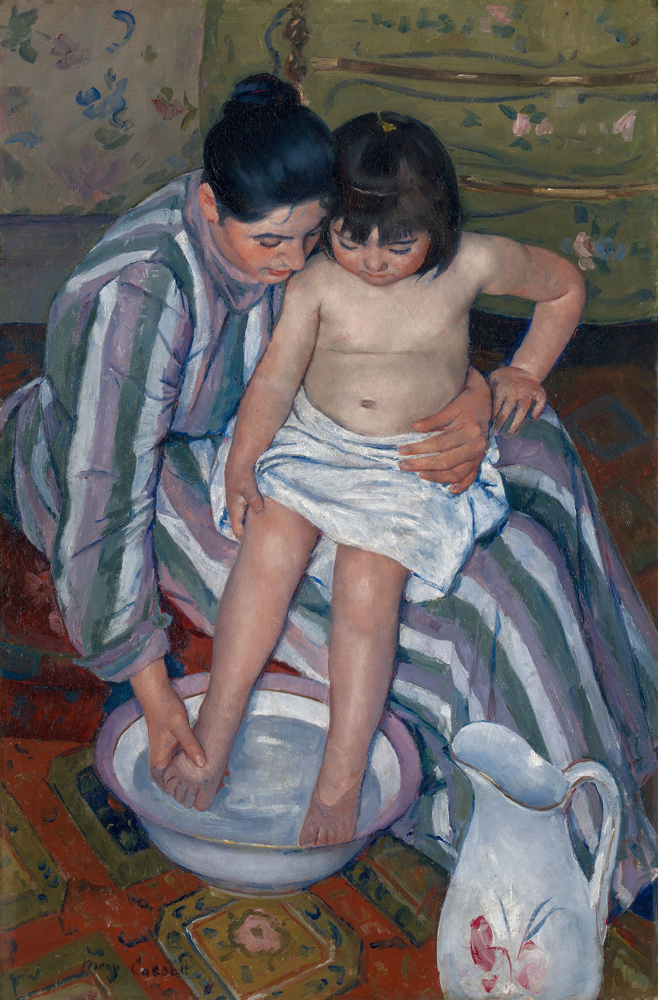

The Child's Bath — A Circle of Care Seen from Above

A bath is an ordinary task, but Cassatt makes the act of holding and washing a child feel architecturally complete. The adult's bent arms, the child's curved back, and the round basin close into one protective circuit. Instead of asking us to admire a posed portrait, the painting lets us look into a moment of absorbed care.
01Composition构图
The viewpoint is unusually high. We see the figures and basin from above, so bodies, floor, and furniture compress into a shallow field of interlocking shapes. The adult's left arm encloses the child while her other hand reaches toward the feet; the child's arm repeats that diagonal in miniature.
The basin anchors the lower half as a pale oval. It is not centered, yet the surrounding limbs keep returning our eye to it, turning a practical object into the composition's quiet center.
02Color Theory配色
The painting avoids a single loud accent. Dusty rose, blue-grey, olive, and cream recur across dress, skin, water, and patterned floor, so the scene feels woven together rather than spotlighted.
Warm flesh and rose sit against cooler blue-grey stripes. The contrast is gentle: closeness comes from repetition and adjacency, not from theatrical light.
03Technique技法
The Art Institute describes the work's dramatically flattened picture plane, decorative patterning, and bright palette as the culmination of Cassatt's engagement with Japanese aesthetics after she saw a major exhibition of Japanese prints in Paris in 1890.
Pattern does structural work here. Stripes, florals, checks, and tile marks separate surfaces without forcing them into deep perspective; the eye reads the painting almost as both intimate scene and designed page.
04Why It Moves Us为何动人
The figures do not perform affection for us. Their faces turn toward the task, and touch carries the emotion: cheek near shoulder, one arm bracing the child, a small hand resting on the adult's knee.
That restraint is why the scene feels convincing. Care appears as coordination—supporting weight, testing water, keeping balance—rather than as a symbolic pose.
05Background作品背景
Mary Cassatt (1844–1926) was an American artist whose career developed largely in France. The Art Institute identifies maternal and familial closeness as a subject she explored repeatedly and notes that this 1893 painting extends her study of Japanese print aesthetics across media.
The museum records the work as oil on canvas, 101.3 × 67.3 cm, signed at lower left, and acquired through the Robert A. Waller Fund (reference 1910.2).
06Steal This可借鉴
- Use a circle to organize touch: repeat a curved object with bent arms and bodies so separate parts read as one action.
- Flatten space when pattern matters: a high viewpoint can turn floors, fabrics, and figures into a single designed field.
- Let gesture carry emotion: hands that support, steady, or reach can say more than a staged expression.
{kind=link}